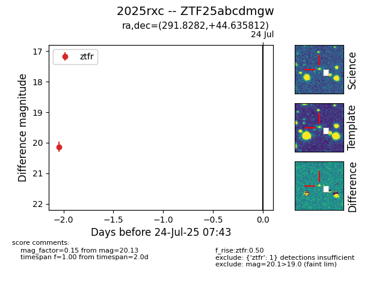

Target ZTF25abcdmgw at 2025-07-24 07:43, see:
FINK: fink-portal.org/ZTF25abcdmgw
Lasair: lasair-ztf.lsst.ac.uk/objects/ZTF25abcdmgw
ALeRCE: alerce.online/object/ZTF25abcdmgw
TNS: wis-tns.org/object/2025rxc
YSE: ziggy.ucolick.org/yse/transient_detail/2025rxc
alt names
ZTF25abcdmgw (ztf,fink)
2025rxc (tns,yse)
coordinates:
equatorial (ra, dec) = (291.8282,+44.63581)
galactic (l, b) = (76.8101,+12.80560)
photometry
last ztfr=20.13
1 ztfr detections
